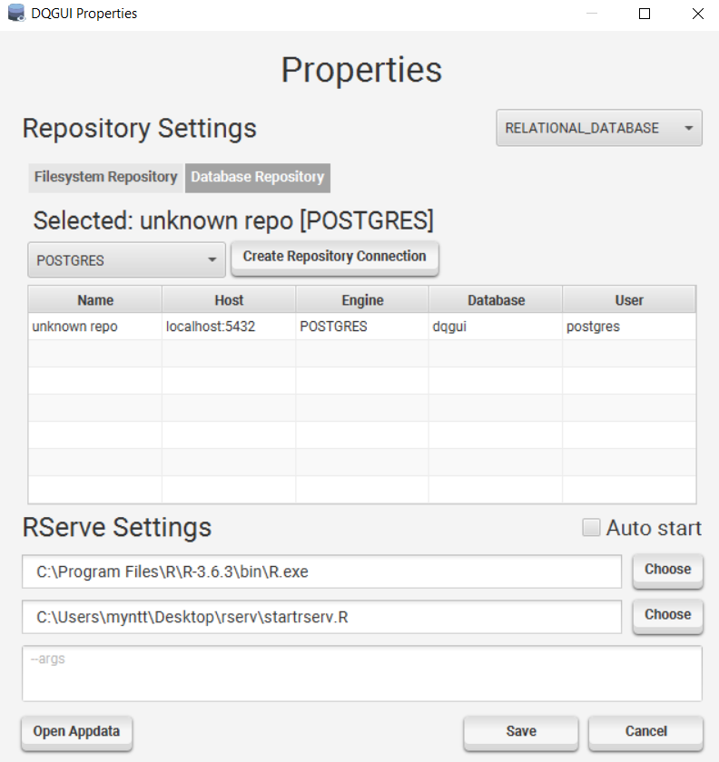
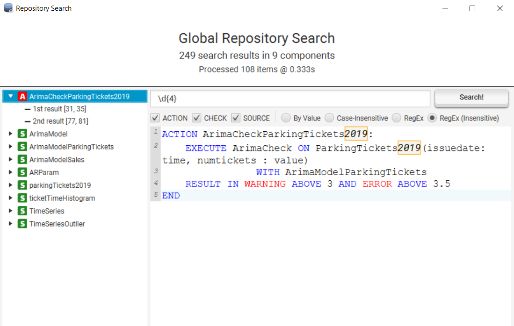
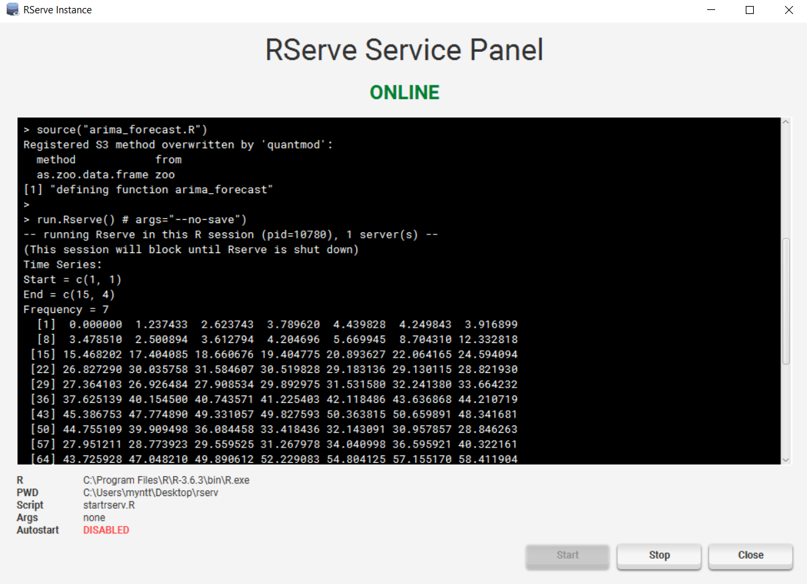
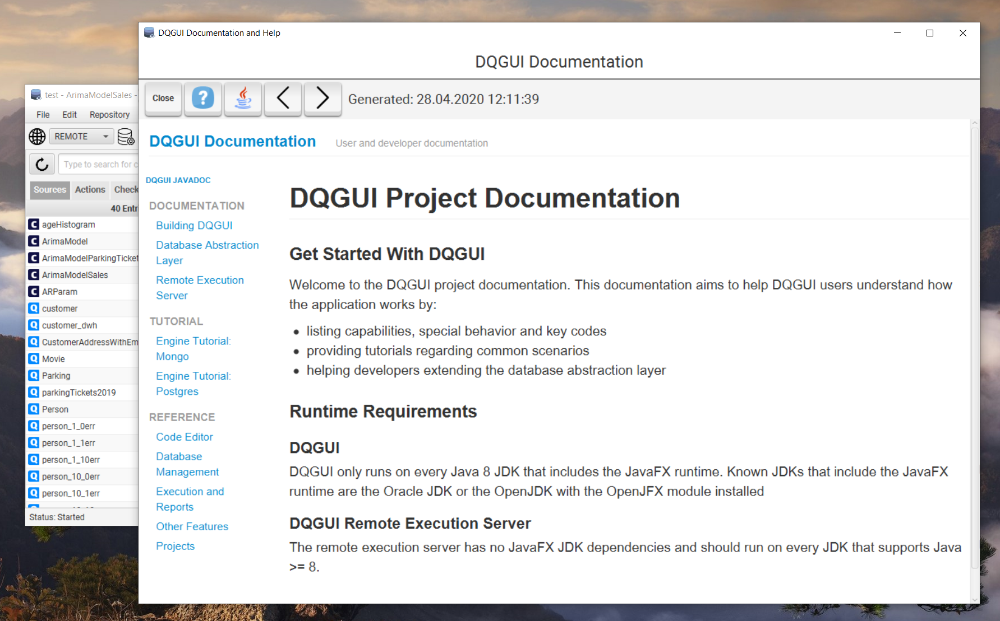

Other Features
- Component Management
- Component Icons
- Properties
- Repository Reload
- Repository Search
- Import
- RServe Management
- Documentation
- Licensing / About
All windows besides the main window can be closed / canceled by using the ESC key, most input masks react on ENTER as accept, those who do not were probably just forgotten.
Component Management
Components can either be opened by double clicking them, pressing space while navigating within the table or via the context menu.
Creation
A component can be created via File -> New -> [ACTION | SOURCE | CHECK].
It is possible to change the component type while still being in creation menu.
The components name is validated to prevent duplicates. If the created component is a check, it will be created as local check.
Renaming
A component can be renamed by using the Rename context menu entry.
It is not possible to give a component an already existing identifier.
Deletion
Multi-selection is supported.
A deletion can be triggered by either triggered by pressing the DEL key or using the Remove context menu entry.
Promotion / Demotion
Checks can be promoted / demoted to / from global.
A global check is stored project wide and can be accessed from multiple projects.
More about global checks in the projects section..
Component Icons
| Icon | Meaning |
|---|---|
 |
Component is an Action |
| Component is a local check | |
| Component is a global check | |
| Component is a Source | |
| Component is a query Source | |
| Component is a const Source |
Properties

When you save the properties the currently selected repository type is set as default.
Filesystem Repository
- Configure the global check location (default is in appdata)
Database Repository
- Manage database repositories
- Create / Delete / Modify / Select possible by either using the create button or the context menu
A database repository will always automatically connect on application startup.
RServe Settings
- set path of R executable
- set path of RServe start script
- pass extra args if required
- auto start allows you to start R automatically on startup
You can also access the DQGUI appdata via the Open Appdata button.
Repository Reload
Will reload the entire project and repository.
Repository Search

The search allows you to search through all global / local components that exist within the repository. - You can select if you want to exclude ACTION / CHECK / SOURCE components
The following search options exist:
- By Value: Will search exactly for the string inputted
- Case-Insensitive: Will search for the string inputted, but case-insensitive
- RegEx: Will allow you to use Java regular expression constructs
- RegEx: Same as above but with a case-insensitive flag
Clicking on one of the marked results will open the file in the editor, put your cursor at the search hit position and draw a red box around the result.
Note: This only works if the file was not changed since the search finished.
Import
Allows you to import components from the file system into your project.
- all files ending with .iqm4hd inside your import directory are processed
- files are categorized by whether they start with ACTION / SOURCE / CHECK
- files that don’t start with such a keyword are ignored and outputted as warning
- all checks are imported as local checks
- if a component already exist within the project it will NOT be overwritten
Ticking the Force Overwrite box will overwrite existing components.
- If the component is a global check it will not be overwritten
- It is impossible to overwrite global checks via import
Export
Allows to export components from your project into a folder in the filesystem.
RServe Management

The RServ Service Panel allows you to start / stop an RServe instance and also shows the std::out / std::err of the R process.
If you stop the application gracefully without stopping R explicitly a shutdown hook will kill R.
Do something like kill -9 and you’ve created yourself an R orphan.
Documentation

This documentation and the javadocs can also be found via Help -> Help and Documentation.
Licensing / About
Shows licenses, libraries used and the creators of DQGUI.